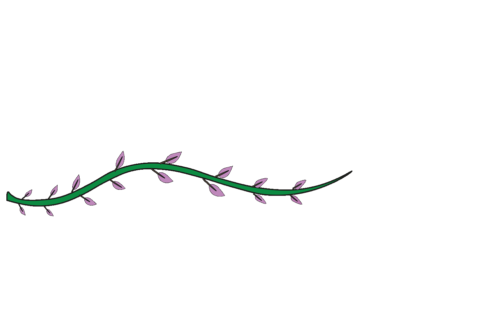
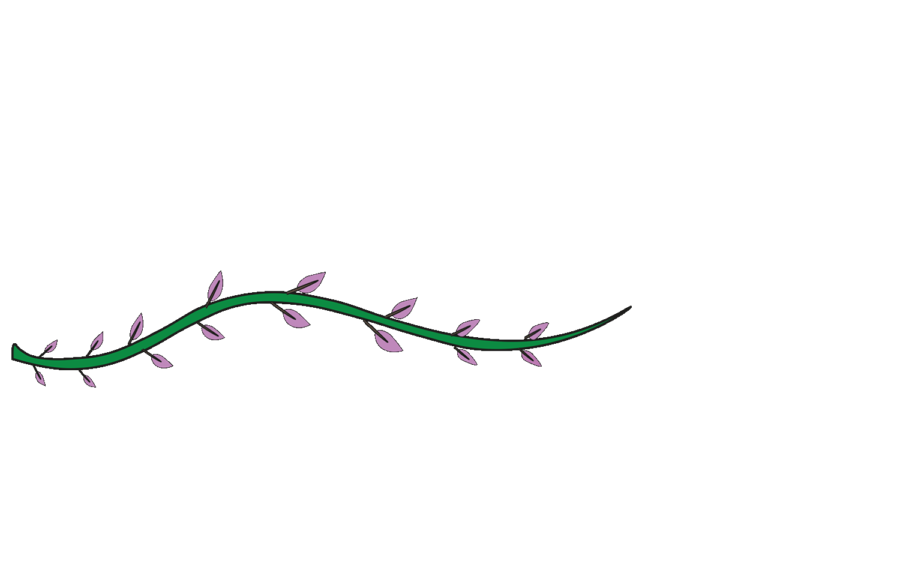
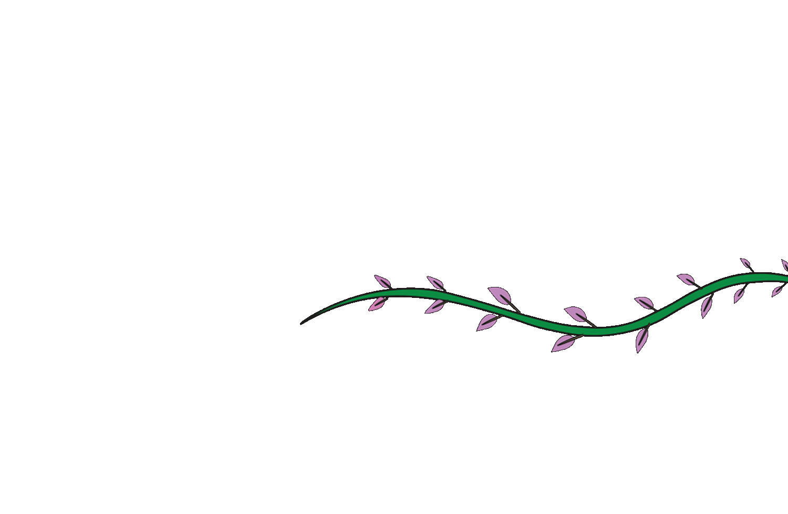

Tropentuin
De Tropentuin is een bijzondere plek waar stadsnatuur en duurzaamheid samenkomen. Hier kun je niet alleen genieten van een oase van rust midden in de stad, maar ook actief bijdragen aan een groenere toekomst. Of je nu een bak wilt huren om je eigen groenten te kweken of gewoon wilt ontspannen tussen het groen, de Tropentuin biedt voor ieder wat wils
. Zelf aan de slag!
Je kunt een tuinbak huren en direct beginnen met het kweken van je eigen groente n en kruiden. Bij aanmelding krijg je alle begeleiding die je nodig hebt, inclusief tips over welke planten geschikt zijn en hoe je ze kunt verzorgen. De Tropentuin is centraal gelegen in Amsterdam en gemakkelijk te bereiken, zodat je altijd een stukje groen binnen handbereik hebt. Of je nu een ervaren tuinier bent of net begint, iedereen is welkom!